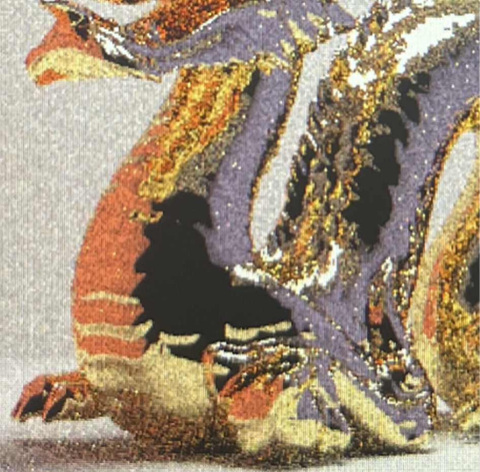

Abstract
In cinematography, it is important to simulate a specific lens so that a computer-rendered scene visually matches the real-world scenes shot with the actual lens; this includes matching all optical characteristics of that lens, and the easiest method is to simulate the physical design and ray-trace through the elements. Simulating the optical design is also useful from an engineering standpoint, since it provides insights of the performance of the lens before production. In this project, we used the pathtracer from class to simulate a compound zoom lens based on a real optical design, and augmented it with contrast-detection auto focus capabilities.
View the final project video here: Video
View the presentation slides here: Slides
View the project repository here: Repo
Part 1: Multi-Element Zoom Lens
Technical Approach:
We simulted a multi-element zoom lens design from Modern Lens Design by Warren J. Smith, chapter 20.1, figure 20.2. This is a two-component, eight-element, retrofocus type zoom lens, with a zoom ratio of 1.89x. This design has a focal length range of 36mm to 68mm, with a varible aperture of F/3.5 to F/4.5. Below are diagrams of the lens in wide-angle state and telephoto state. As seen here, by moving the four elements in the middle, the focal length of the lens can be changed.

|

|
The following is an annotated diagram that we used to encode the lens into the pathtracer.


Let the element closest to the sensor be element one, and the element closest to object be element eight. Lens zoom is achieved by increasing the distance between elements one and two while decreasing the distance between elements five and six. The magnitude of the change is linearly controlled by zoom_index, a variable between 0 and 1.
Since the lens dimensions are in milimeters, but the scenes we are rendering are not, we have to scale down the entire lens structure to maintain the correct relative size between the camera and objects in the scene. This is controlled by parameter scale_camera_to_scene, whose value is set empirically.
To ray-trace the lens, we emit a ray from the sensor towards the lens. Since there is no aspherical element, each surface in the lens is modeled as a sphere, and we use the existing framework to intersect the ray with each surface sphere and derive the refracted ray. Any ray that misses the next lens element or hits the lens barrel is ignored and re-sampled.
New data structures:
1. Added a Lens struct in camera.h, which contains all the parameters associated with a single lens element.
2. Added lens_elem_one to lens_elem_eight fields to the camera class to keep track of all lens elements of the camera lens.
3. Added zoom_index field to the camerea class, which ranges between 0 and 1, with 0 being the wide-angle end and 1 being the telephoto end.
New GUI controls:
1. "W" and "T" keys can now zoom the lens wider or tighter, respectively. There are six levels of adjustments.
2. "K" and "L" keys still narrows down and opens up the aperture, respectively, but LensRadius is now limited to between 0 and 1, with 1 being the maximum aperture and 0 being a pinhole model.
3. ";" and " ' " keys still make the lens focus closer and farther, respectively. But since now the AF algorithm and this manual focus controll share the same variable Camera::focalDistance, this input may be overridden by the AF algorithm.
4. “y” key to turn on the AF Mode, use “O” key to show the AF patch box and re-autofocus.
Result Demo:
Here is a short demo of the compression effect that we are now able to achieve. This is done by zooming in while moving the camera backwards to keep composition the same.

Part 2: Contrast-Detection Auto Focus
Technical Approach:
Since we can no long use the old manual focus method that’s given for the thin lens because it generates a ray, finds the intersection, and re-calculate focalDistance which doesn’t really work for compound lenses as the rays are not necessarily converging to one fixed point, we need to find a evaluation function that approximate the level of in-focus. After testing the behavior of the image by zooming in and out, we decided to transform the rgb values to greyscale for every pixel to remember the luminance in range of 0 to 1. In this way, we can then use these changed value to calculate the sharpness as a measurement of defocus. we calculate the overall sharpness of these pixels and selected a focal distance with respect to the highest sharpness, and we re-render the entire scene with these hyperparameters after.
During the process of update_pixel by transforming a Color object into uint32_t with each r, g, b, a value taken 8 bits, in image.h we added in reyscale[x + y * w] = 0.299 * c.r + 0.587 * c.g + 0.114 * c.b concurrently and made sure the image buffer was resized by with dimensions w * h. In this way, each time a pixel with its color is populated into the pixel buffer 'data', the corresponding greyscale vector is recorded as well.
To implement the red box for the patch outline, we modified the OpenGL section of visualize_cell() within the raytraced_renderer.cpp only with different values for glLineWidth and 4 glVertex2f restrictions.
|
|
|
After some brief setups on the GUI of RENDERING and DONE modes, we were able to turn on and off the cd_af mode and press ‘o’ to autofocus successfully. During the process of autofocus, we used the greyscale pixel vector collected from the last section, and selected 1/5 of the pixel centered in the scene. We got the overall sharpness of these pixels by finding the min and max greyscale values within the area, and calculated (max - min) / (max + min) value. We picked the focal distance with respect to the highest sharpness and re-render the entire scene by overridding start_raytracing() with cd_autofocus() while the cd_af is on.
New data structures (cont'):
4. Added cd_autofocus() to calcualte the sharpness and rerender the AF patch.
5. For case RENDERING and DONE within the raytraced_renderer file, turn on visualize_af() with OpenGL for focus region highlighting.
6. In image.h, added a greyscale container and resize it for color value preprocessing.
7. Changed renderred.h, and application.cpp to adapt the new values ('y' and 'o') in key_press we added.
New GUI controls (cont'):
4. “y” key to turn on the AF Mode, if off, the camera will remain in the MF Mode with the default autofocus with right-clicking
5. use “O” key to show the AF patch box and AF re-autofocus.
Result Demo:
Here is a short demo of the autofocus for the compound lens we worked on. Press 'r' to render the scene, zoom in and out to defocus, then use 'y' to turn on the autofocus (cd_af) mode. During or at the end of rendering, press 'O' when trying to autofocus, and our program will use the pixels within the red box to find the best focal distance. If you are not satisfied with the dimensions of the autofocus, change the size_t x, size_t y in the AF Param Selection by Sharpness section, but we chose such dimension for efficiency.

For a closer comparison, here is some more shots to the autofocus result, the rightmost picture is a reference with the secen entirely in the DOF to show the example with zero blurriness and correct parameters. The first one is the one with AF, and the middle one is without AF. The one with our AF definitely looks shaper and is with a higher level of color contrast comparing to the one without, remember the focus box is not very close to the pixels here so the scene within the view does not look completely in focus. Again, we didn’t use phase detection, edge detection autofocus, or neutral networks to train the evaluation function for focusing, but we are considering these methods for future improvement. As it for now, so we are pretty satisfied with the outcomes from an easy evaluation technique like this.
|
|
|

|
References
Smith, Warren J. Modern Lens Design. McGraw-Hill, 2005.
CS184 Project 3-2 Pathtracer, Task 1, 2, 4.
Contributions
Alex Hao and Hanchen Wang worked on part 1 of the project, while Arthur Yin and Cindy Chen worked on part 2 of the project.